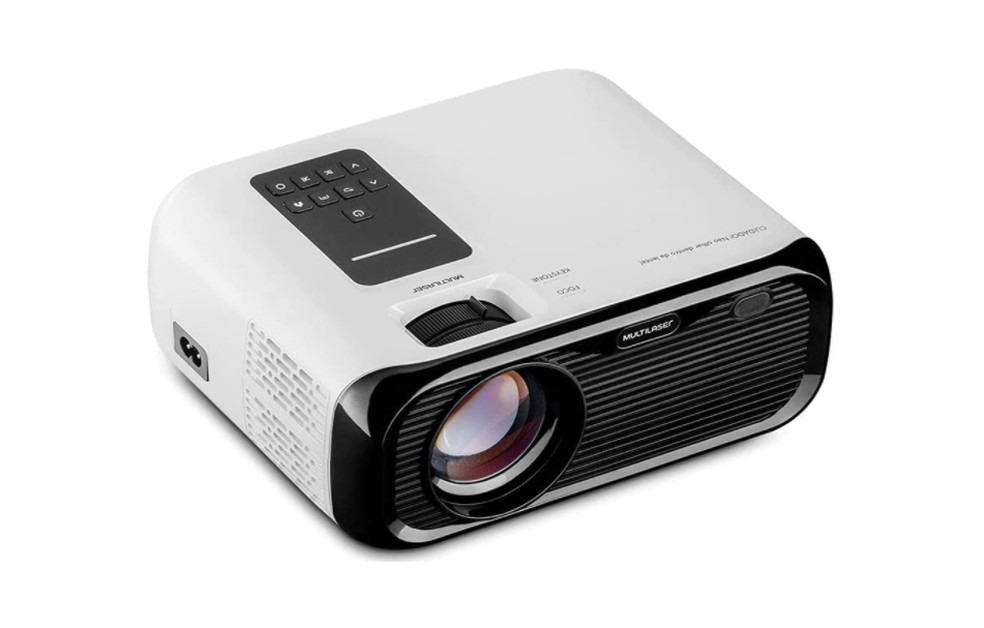
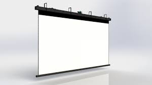
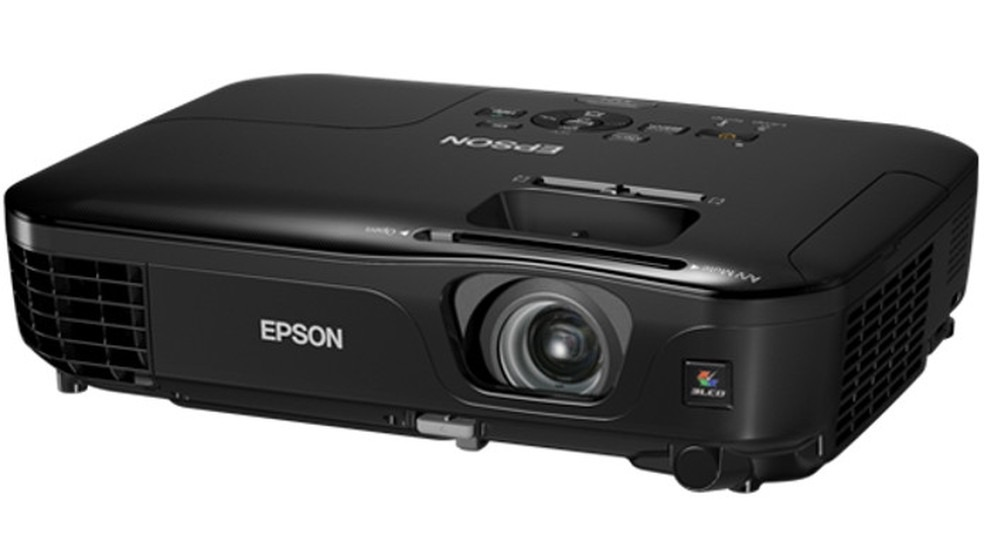

📝 Artigos
Artigos completos sobre projeção, equipamentos, Holyrics e tecnologia para igrejas.
Equipamentos essenciais para uma boa projeção
A projeção de imagens em cultos e eventos exige equipamentos adequados para garantir brilho, nitidez e confiabilidade. Abaixo explicamos os equipamentos essenciais, suas funções, especificações técnicas relevantes e um passo-a-passo resumido de montagem.

Projetor de LED

Tela de projeção

Projetor Epson (exemplo)
1. Projetor (essencial)
Função: gera a imagem projetada na tela. É o equipamento principal para garantir boa visualização de letras, vídeos e fundos animados.
Especificações importantes:
- Lumens (ANSI) — quanto mais alto, mais forte o brilho. Para igrejas:
• 2.500–4.000 lumens para ambientes controlados
• 4.000+ lumens para ambientes claros - Resolução — FHD (1080p) já traz excelente nitidez para letras; 4K é ideal para telas grandes.
- Tipo de luz — Laser: vida útil maior e manutenção menor. / Lâmpada convencional: mais barato, mas exige troca.
- Conexões — HDMI é altamente recomendado; outras entradas são úteis dependendo do setup.
- Throw Ratio — determina a relação entre a distância do projetor até a tela e o tamanho da imagem.
2. Notebook / PC (Fonte de sinal)
Função: roda o Holyrics ou outro software de projeção, além de vídeos e backgrounds animados.
- Processador: modelos modernos, como Intel i5 ou Ryzen 5, são adequados.
- RAM: 8 GB no mínimo; 16 GB é ideal para lidar com multitarefas e mídia pesada.
- Armazenamento: SSD (256 GB ou mais) para carregar rapidamente os arquivos de mídia.
- Saídas de vídeo: HDMI integrado; adaptadores para USB-C → HDMI, se necessário.
3. Cabos e adaptadores
Função: transmitir o sinal de vídeo (e áudio) do computador para o projetor de maneira confiável.
- HDMI: um cabo de boa qualidade é essencial; até 10 metros funciona bem com cabo passivo, para mais é melhor usar cabo ativo ou soluções de extensão.
- Adaptadores: como USB-C para HDMI, DisplayPort para HDMI ou VGA para HDMI, dependendo do seu dispositivo.
4. Tela / Superfície de projeção
Função: refletir a imagem de forma clara para os espectadores.
- Tela retrátil: prática e fácil de guardar.
- Tela fixa: retorna imagens mais nítidas em locais permanentes.
- Superfície branca lisa: opção econômica quando não houver tela disponível.
5. Áudio e microfone
Em muitos cultos, o áudio também faz parte do conjunto de projeção. Um bom som ajuda a manter a atenção do público.
- Caixas de som: adequadas ao tamanho do ambiente.
- Mixer: controle o volume do microfone e do vídeo.
- Microfone: evite ruídos e atraso na projeção do conteúdo.
Todos esses equipamentos trabalham juntos para tornar a projeção mais profissional, eficiente e livre de falhas.
📰 Artigos Semanais
Bem-vindo ao blog do Projeto Holyrics! Aqui você encontra artigos semanais sobre projeção, PowerPoint, Holyrics, tecnologia para igrejas, equipamentos e tutoriais completos.
Como escolher o projetor ideal
Aprenda a diferença entre 2.500, 3.000 e 5.000 lumens, resolução, distância e throw ratio.
Ler artigo →PowerPoint integrado ao Holyrics
Aprenda a usar o PowerPoint dentro do Holyrics para apresentações profissionais.
Ler artigo →Atalhos da Bíblia no Holyrics – Guia Completo
Aprenda todos os atalhos da Bíblia no Holyrics para deixar seu culto mais rápido, organizado e profissional.
Ler artigo →Novos Temas Animados - Artigos Completos
Tenha acesso aos mais novos temas animados para usar na sua Igreja. Temas animados incríveis e com novidades de aniversário de nove anos do Holyrics.
Ler artigo →